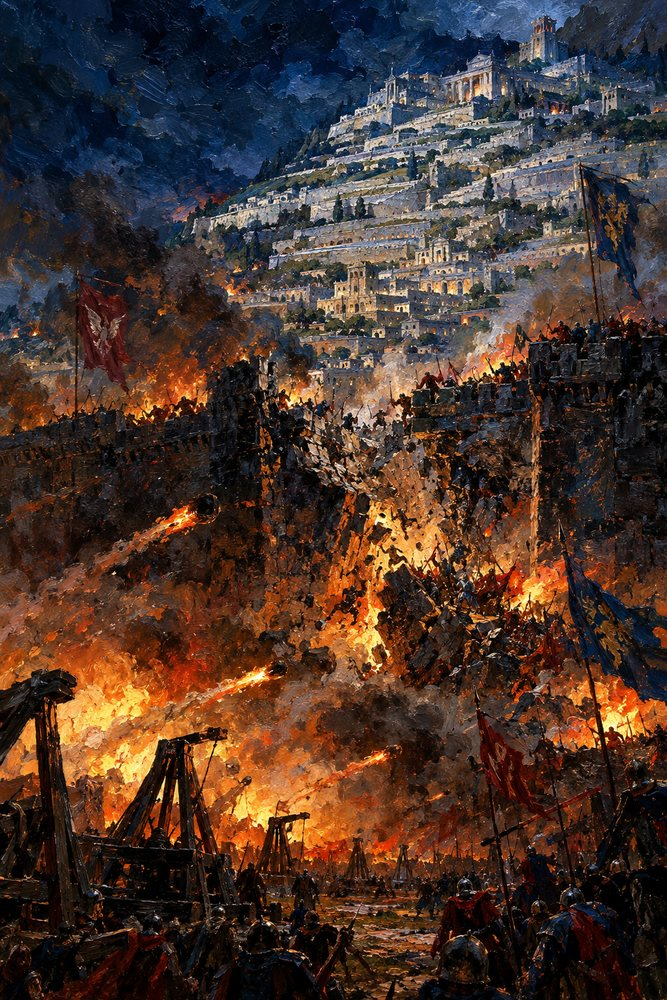

Record 9 of 13
Tavgora's outer wall goes to Bagrat's siege engines after Vazha's faction has refused three separate offers of surrender. The engines are brought up on the nineteenth day of Lorren, and Bagrat does not go to watch them
A walled hill city of white terraces burns at night while siege engines hurl flaming stones at a breaking wall under red and blue banners.